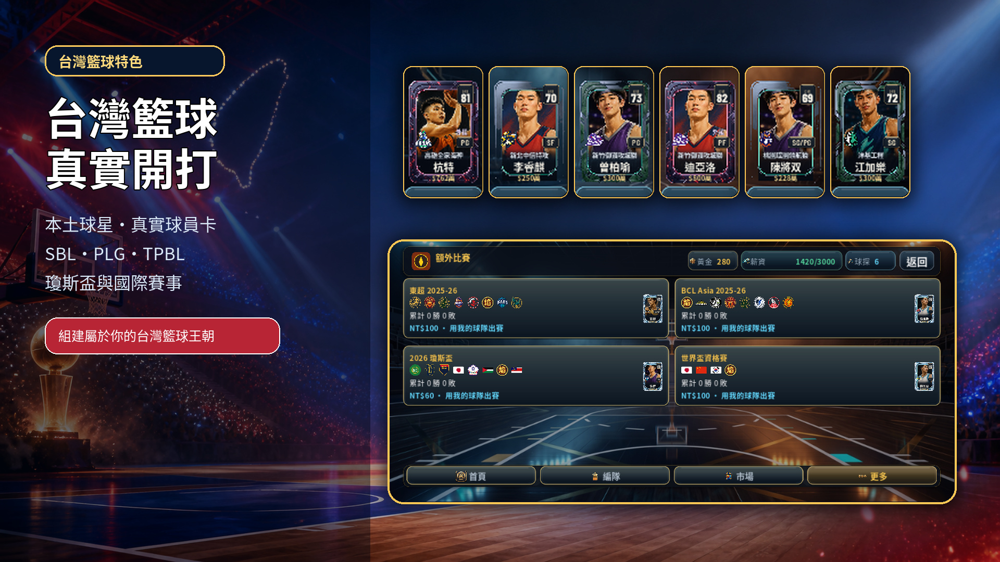
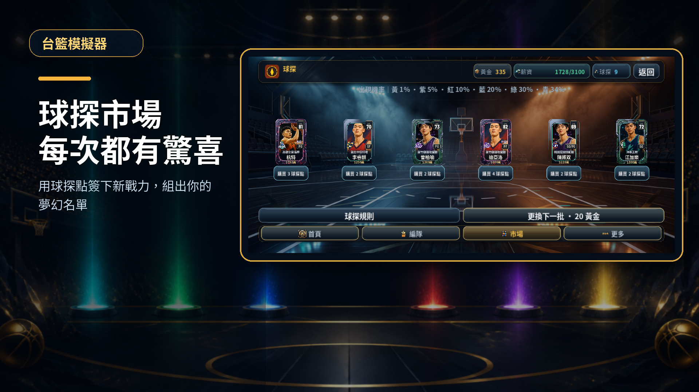
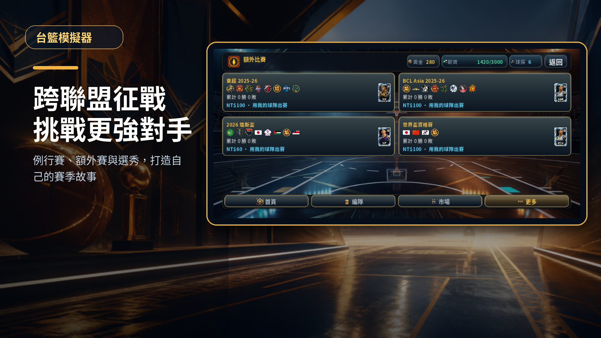
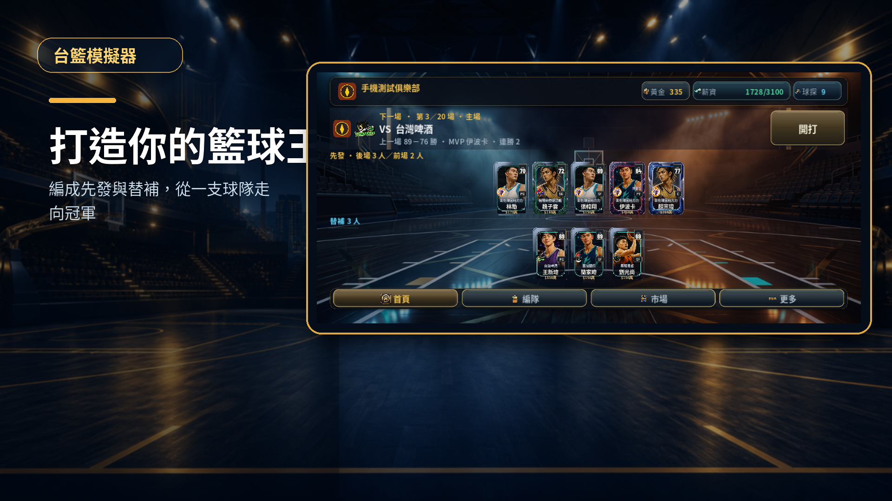
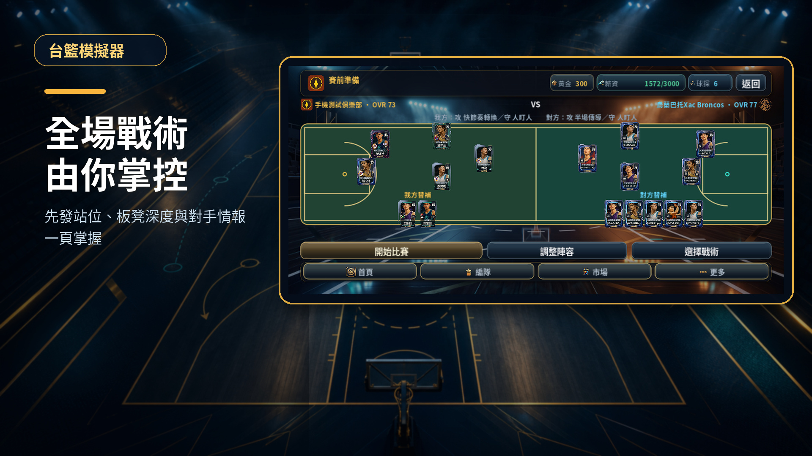

SBL
基本功與團隊籃球從最硬的基本功開始
用有限薪資建立平衡陣容，靠輪替、壓迫防守與半場執行力站穩第一個賽季。
- 20 場例行賽
- 團隊加成最高 +4
- 解鎖隔離單打與換防
TAIWAN BASKETBALL MANAGER
SBL、PLG、TPBL 到國際賽，收集稀有球員卡與黃金老將，組出只有你能帶領的台灣籃球王朝。

THREE LEAGUES. ONE DYNASTY.
從 SBL 起步，挑戰 PLG 與 TPBL。每個聯盟都有不同節奏、薪資空間、球隊與解鎖戰術。
用有限薪資建立平衡陣容，靠輪替、壓迫防守與半場執行力站穩第一個賽季。
更多轉換進攻與外線火力，用明星側翼、手遞手與西班牙擋拆打穿防線。
面對不同風格的完整球隊，活用內線、側翼與替補深度，在高強度系列賽中勝出。
COLLECT THE LEGENDS
青、綠、藍、紅、紫到黃金卡，每個稀有度都有不同價值。球探只使用球探點，想換下一批才花黃金。

球探點購買 · 黃金刷新GOLDEN GENERATION
把記憶中的台籃代表人物帶回球場，和現役球員一起組成不可能在現實出現的夢幻陣容。

FROM TAIWAN TO THE WORLD
組好最強十二人，代表你的俱樂部踏上國際舞台。不同賽事有不同對手與報名條件，每次晉級都是新的考驗。
BUILD YOUR DYNASTY
每一張卡、每一次輪替、每一套戰術都會改變結果。你不是旁觀者，而是球隊真正的決策者。
安排完整先發與替補，依位置、能力與薪資帽打造最合理的陣容。
ROSTER BUILDING用球探點鎖定新戰力，在市場和交易中找到最適合球隊的拼圖。
SCOUT & MARKET先看雙方站位與戰術情報，再決定攻防策略、輪替與臨場選擇。
TACTICAL MATCHUP挑戰 SBL、PLG、TPBL、盃賽與額外賽事，把俱樂部帶上最高舞台。
CHAMPIONSHIP ROADHOW YOU PLAY
簡單上手，但每一步都有值得思考的選擇。
每批球探名單都有不同稀有度與價格。要立刻出手，還是花黃金刷新等待更好的球員？

球星很多不等於能贏。位置是否平衡、薪資是否超帽、同隊球員能否啟動加成，都要一起考慮。

雙方先發站上完整球場，對位、OVR、隊徽、戰術與替補一次看清楚，再決定要怎麼打。
從例行賽一路打到跨聯盟盃賽。每一場戰績都會累積，系列賽結束後還有選秀和球隊建設。
IN-GAME FOOTAGE
所有圖片皆為實際遊戲介面。點擊可以放大查看。
EARLY ACCESS
測試版免費參加。你的觸控、版面、平衡與玩法回饋，都會直接影響下一版。
商店測試連結啟用後，本頁按鈕會直接帶你前往官方安裝頁面。
INSTALL GUIDE
THE NEXT SEASON STARTS WITH YOU
選一個聯盟、組十二名球員，下一座冠軍由你決定。
現在加入測試